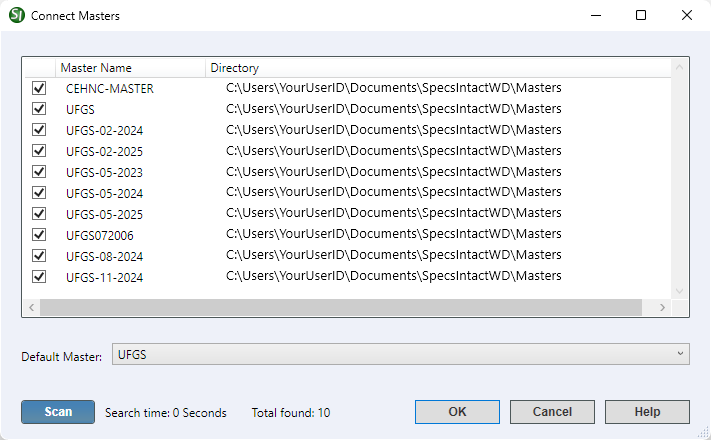

This command can also be executed from the SpecsIntact Explorer's Toolbar or by using the keyboard shortcut Ctrl+N.
The Connect Masters window displays a list of available MastersA collection of Masters consisting of the Unified Facility Guides Specifications (UFGS), local agency or company Masters within the connected Working Directories. This feature enables SpecsIntact to scan your system for all accessible Master files, displaying them by their name and precise location.
 To learn about selecting a default Master during Job creation, refer to the File menu > New > Job > General tab topic.
To learn about selecting a default Master during Job creation, refer to the File menu > New > Job > General tab topic.
 The use of multiple Working Directories can result in Masters residing in different locations, preventing their display within the current list. If this occurs, follow the steps below 'To Connect Masters Not Located In A Connected Working Directory'.
The use of multiple Working Directories can result in Masters residing in different locations, preventing their display within the current list. If this occurs, follow the steps below 'To Connect Masters Not Located In A Connected Working Directory'.
When connecting to a Master with the same name but a different path, deselect the old path, then select the Master with the correct path.

- Master List - Displays a list of Masters available on your system with the option to either select or deselect Masters for visibility within the SpecsIntact Explorer. A checked Master indicates an active connection and its availability for configuring JobsA collection of projects and Masters in the SpecsIntact Explorer.
- Default Master - Provides the option to use the default Master selected during installation, or select a different Master from the available list.
- Scan button - Opens the Windows File Explorer to manually locate Masters outside of the default or currently connected Working Directories. Upon selection, the chosen Master will be added to and displayed within the list of connected Masters.
Standard Windows Commands
 The OK button will execute and save the selections made.
The OK button will execute and save the selections made.
 The Cancel button will close the window without recording any selections or changes entered.
The Cancel button will close the window without recording any selections or changes entered.
 The Help button will open the Help Topic for this window.
The Help button will open the Help Topic for this window.
How To Use This Feature
 to Connect Masters:
to Connect Masters:
- In the SpecsIntact Explorer, perform one of the following:
- Click the Connect Masters button on the Toolbar
- Select the Setup menu and select Connect Masters
- Use the keyboard shortcut Ctrl+N
- In the Connect Masters window, select the required Master(s)
- In the Default Master field, perform one of the following:
- Leave the default Master selected
- Use the drop-down arrow and select a different Master from the list
- Click OK
to Connect Masters Not Located In A Connected Working Directory:
- In the SpecsIntact Explorer, perform one of the following:
- Click the Connect Masters button on the Toolbar
- Select the Setup menu and select Connect Masters
- Use the keyboard shortcut Ctrl+N
- In the Connect Masters window, click the Scan button
- In the Windows File Explorer window, navigate to the folder where the Master resides
- Click the Select Folder button
- In the Connect Masters window, select the newly added Master
- Click OK
Additional Learning Tools
 Download the Installation Guide from the SpecsIntact Website's Support & Help Center page.
Download the Installation Guide from the SpecsIntact Website's Support & Help Center page.
 Watch the Connect Working Directory and UFGS Master eLearning module within Chapter 1 - Getting Started.
Watch the Connect Working Directory and UFGS Master eLearning module within Chapter 1 - Getting Started.
Users are encouraged to visit the SpecsIntact Website's Support & Help Center for access to all of our User Tools, including Web-Based Help (containing Troubleshooting, Frequently Asked Questions (FAQs), Technical Notes, and Known Problems), eLearning Modules (video tutorials), and printable Guides.